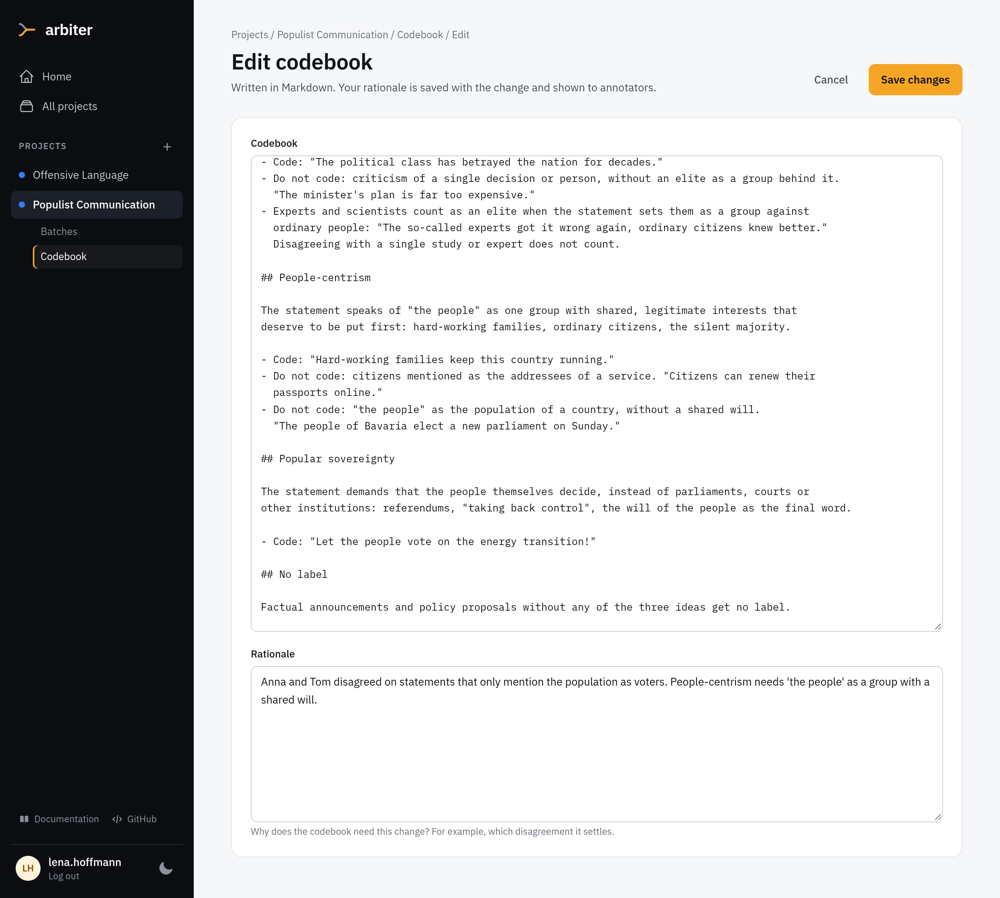
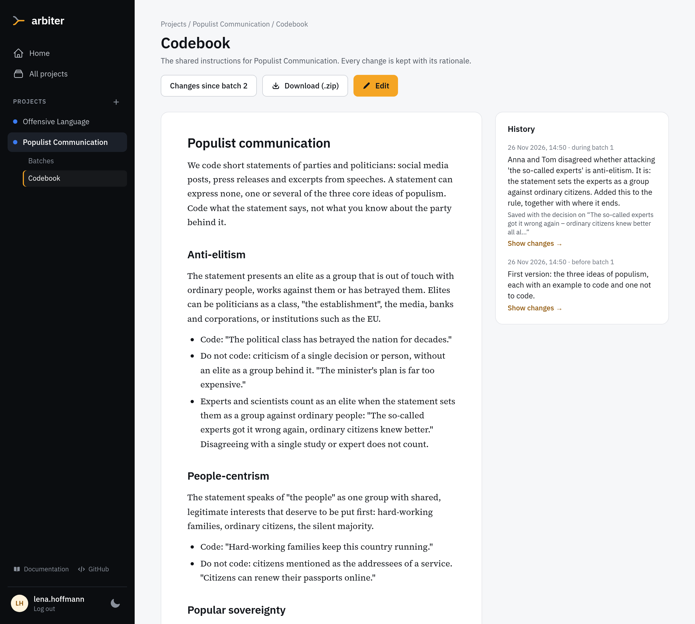

Write the codebook
The codebook holds the instructions that all annotators follow: what each label means, what counts and what does not, and how to handle the borderline cases. Annotators keep it open next to the text while they annotate and discuss; experts write it and change it as the project goes on.
Arbiter keeps every version. Each change is saved with the reason for it, and each batch remembers the version it started with, so you can always say which rules a label was given under.
Write the first version
A new project starts with an empty codebook. Write the first version before you upload the first batch: the batch starts with the codebook as it is at that moment.
Open the codebook: Codebook under the project in the sidebar, or Open on the codebook card of the project page.
Click Edit.
Write the codebook in the large field, and in Rationale why you are changing it; for the first version, “First version” is enough.
Click Save changes.


Lena adds a rule to People-centrism and explains why.
What belongs in it
A good codebook lets two annotators who read the same text reach the same label without talking to each other. For every label, write
a definition in a few sentences,
examples of texts that get the label, and of similar texts that do not,
how to decide the cases you expect to be difficult.
Give every label its own heading with the label’s name: annotators find it faster in the panel next to the text. In projects with spans in the text, also say what exactly to mark, for example only the words that carry the insult, or the whole sentence.
You do not have to foresee everything. Disagreements show where the codebook is unclear, and the experts add rules as they decide them.
Formatting
The codebook is written in Markdown:
You write |
Annotators see |
|---|---|
|
headings |
|
bold, italic |
lines starting with |
lists |
|
an indented quote |
|
a link |
a table in Markdown syntax |
a table |
Images are not shown.
Change it
Every expert of the project can change the codebook at any time, with Edit on the codebook page. The rationale is required: annotators see it with the change, under Why it changed (see Codebook changes). Write it for them: which disagreement the change settles, or what was unclear before.
Annotators always see the current version, also in the middle of a batch. If you change a rule while they are still annotating, the texts they have labeled already followed the old one; let them know, so they can review those texts before they finalize.
Most changes come from deciding disagreements: the expert decision page lets you edit the codebook next to the text, and the change is saved together with the decision, see Decide disagreements.
History and download
The codebook page lists every change under History: when it was made, before or during which batch, its rationale and, if it was saved with a decision, the text that was decided. Show changes opens that change with the added and removed text marked.


The codebook page of an expert.
Download (.zip), on the codebook page and on the project page, gives you the codebook as a Markdown file (main.md) together with its complete history as a git repository: every version, with its date and rationale. Every batch’s starting version is tagged batch_1, batch_2 and so on, so that git show batch_2:main.md prints the codebook that batch 2 started with. Keep it with your data: it documents the rules every label was given under.